Estadística descriptiva
Estadística Básica | 2026
Hoja de ruta
- Intro: que es la estadistica, objetivos
- Variables: tipos, escalas
- Poblacion vs muestra: tipos de muestreo
- Distribucion frecuencias: tablas, gráficos
- Medidas de resumen
- Tendencia central
- Dispersion
- Sesgo
- Kurtosis
Preparando R/RStudio
Introducción
¿Qué es la estadística?
Es la ciencia del aprendizaje a partir de los datos. Involucra los siguientes pasos:
- Definición del problema de estudio
- Recolección de los datos
- Resumen de la información
- Análisis, interpretación y comunicación de los resultados
Cuando se aplica a problemas biológicos: Bioestadístca o Biometría
Dos grandes ramas:
Descriptiva: conjunto de técnicas y procedimientos para organizar, resumir y presentar datos.
Inferencial: conjunto de técnicas y procedimientos para obtener conclusiones basadas en datos muestrales.
Objetivo final
Ayudar a la toma de decisiones y generar conocimiento científico cuando la información disponible es limitada y variable.
Caso de estudio
El carbono orgánico (CO) es un indicador del nivel de fertilidad global del suelo. Un investigador está interesado en caracterizar los niveles de CO (g 100g-1) de los lotes agrícolas del Departamento Las Colonias. Por cuestiones logísticas sólo se puede acceder a lotes que están en barbecho.
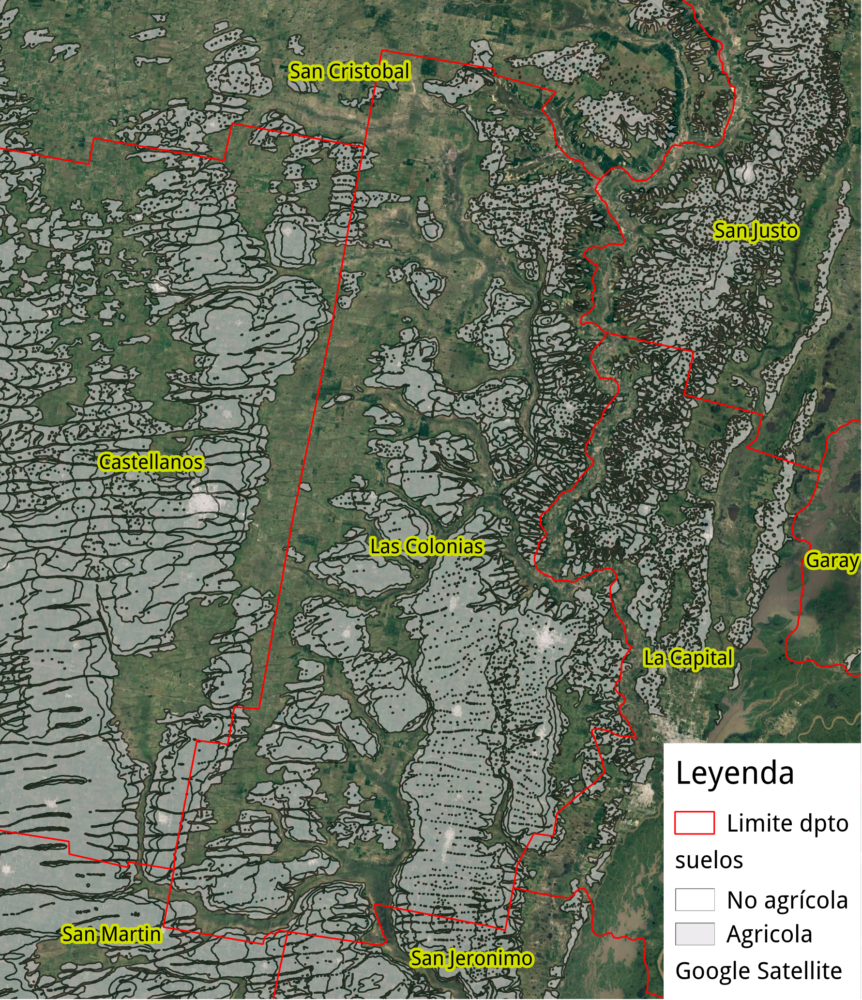
¿Cuál es el problema de estudio?
¿Cómo la Estadística puede ayudar en este problema?
Variables y datos
Variable una característica o atributo de interés que se observa o mide en la unidad de observación.
Datos son los valores que puede tomar la variable.
TIPOS DE DATOS
- Cualitativas: que expresan una cualidad, datos no numéricos. (color de pelo, sexo, estatus sanitario, estado fenológico)
- Cuantitativas: que expresan una cantidad discreta (número de ramas, frecuencias) o contínua (peso de granos, contenido de P del suelo, altura planta)
ESCALA DE MEDICION
Que cantidad de información tienen y que métodos se pueden aplicar
- Nominal: cualitativa (el número de identificación o RP de una vaca)
- Ordinal: cualitativa con orden (posición en el ranking del control lechero)
- De intervalo: cuantitativa, orden y distancias (fecha del último parto)
- De razón: cuantitativa, orden, distancia y proporciones (días desde el último parto)
Nominal < Ordinal < Intervalo < Razón
Caso de estudio
El carbono orgánico (CO) es un indicador del nivel de fertilidad global del suelo. Un investigador está interesado en caracterizar los niveles de CO (g 100g-1) de los lotes agricolas del Departamento Las Colonias. Por cuestiones logísticas sólo se puede acceder a lotes que están en barbecho.
¿Cuál es la variable de interés?
¿Qué tipo de datos puede contener?
¿Qué escala puede aplicarse a estos datos?
Población y muestra

Algunas definiciones
Población: la totalidad de las observaciones individuales sobre la cual se quiere realizar inferencia. Definida en tiempo y/o espacio y caracterizada por parámetros. Finita (contable) o infinita (incontable)
Población objetivo: todos los individuos o elementos sobre los que se quiere hacer inferencia. Ej: tambos de una cuenca lechera
Población muestreada: conjunto de individuos o elementos que pueden ser incluidos en una muestra, i.e. lo que realmente se puede muestrear. Mejor si coincide con la población objetivo. Ej: tambos registrados en ALECOL
Muestra: subconjunto de observaciones individuales elegidas de la población. Finita. Se caracterizar por sus estadísticos. Ej: 10 tambos de una cuenca lechera
Unidad de muestreo: el objeto o individuo que es muestreado. Ej: el tambo X
Unidad de observación: el objeto o individuo del cual se obtienen datos. Ej: las vacas del tambo X cuya producción individual es medida
¿Cómo debe ser la muestra?
Para obtener conclusiones válidas sobre la población, la muestra debe ser…
- representativa que capture las características principales de la población
- aleatoria que todos los individuos de la población tengan una probabilidad conocida de ser incluidos para eliminar sesgo.
- independiente la probabilidad de selección de cada individuo no se altera conla selleción
Tipos de muestreo
- Aleatorio simple
- Estratificado
- Agrupado
- Sistemático
- Deliberado o por juicio
- Conveniencia
Muestreo aleatorio simple (MAS)
Las \(n\) unidades que componen la muestra se eligen al azar con una probabilidad conocida e igual se ser seleccionadas. Aplicable a poblaciones homogéneas sin patron de variabilidad.
Ejemplo
Seleccionar plantas al azar

Muestreo estratificado
La población no homogénea se divide en grupos que reflejen el patrón de variabilidad utilizando variables auxiliares y la selección de individuos (unidad de muestreo) se realiza al azar dentro de cada estrato.
Ejemplo
Seleccionar plantas en distintos tipos de suelo

Muestreo agrupado
La variable se observa o mide en todos los individuos (unidad de observación) que pertenecen a grupos predefinidos (unidad de muestreo). Cada grupo tiene la misma probabilidad de ser elegido.
Ejemplo
Seleccionar grupos de plantas vecinas: seleccionado se eligen las 2 que le siguen.

Caso de estudio
El carbono orgánico (CO) es un indicador del nivel de fertilidad global del suelo. Un investigador está interesado en caracterizar los niveles de CO (g 100g-1) de los lotes agricolas del Departamento Las Colonias. Por cuestiones logísticas sólo se puede acceder a lotes que están en barbecho.
¿Cuál es la población objetivo y la población muestreada?
¿Cuál sería la unidad de muestreo y la de observación?
¿Cómo se puede elegir la muestra?
¿Cómo obtener una muestra aleatoria?
Suponiendo podemos enumerar los 4000 lotes en barbecho (población):
Pasos
- Identificar cada lote con un número.
- Aleatorizar esos números.
- Seleccionar los primeros \(n = 40\) números.
Alternativas para aleatorizar
- Física: sorteo con papelitos, bolillas, etc.
- Numérica: tabla de números aleatorios, computadoras.
- Nunca aleatorizar mentalmente!!
Ejemplo
¿Cómo aleatorizar en R?
[1] 1017 3908 679 2177 930 1533 471 2347 270 1211 3379 597 1301
[14] 3946 1974 3566 330 1799 3913 1615 1749 37 1129 729 878 485
[27] 3749 1826 2922 2430 3673 975 2849 2900 2979 2374 2378 554 1446
[40] 2159Luego, los datos de CO de los 40 lotes elegidos al azar son:
2.62, 2.7, 3.23, 1.46, 4.08, 2.85, 1.85, 2.08,
3.08, 3.7, 2.46, 2.7, 1.85, 5.16, 2.85, 3.16,
1.69, 2.85, 2.77, 1.77, 2.16, 3.16, 1.85, 2.31,
1.85, 2, 1.85, 2.23, 2.08, 2.7, 2.77, 2.62, 2.46,
1.93, 2.16, 2.23, 3.16, 2.62, 3.08, 3¿Qué nos dicen estos datos? ¿Cómo podemos sacar conclusiones?
Adelanto
Aplicando técnicas de estadística descriptiva a estos 40 datos de CO podremos llegar a esto:
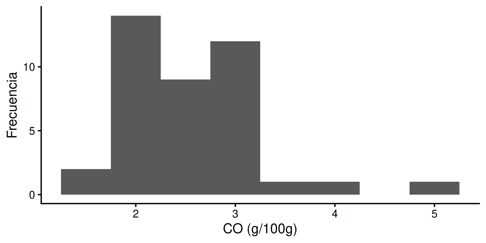
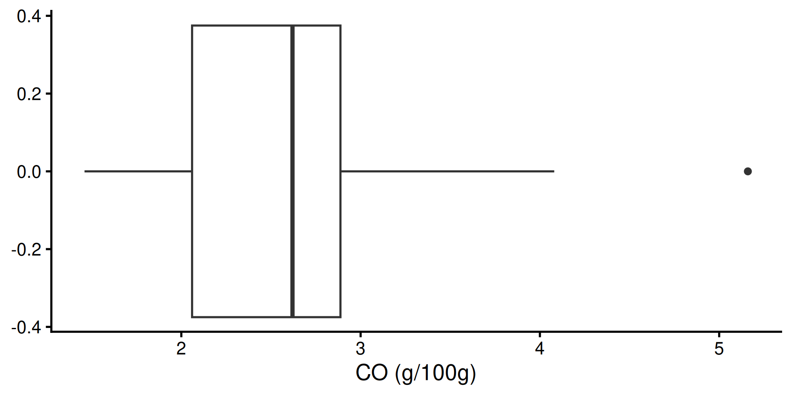
n | media | mediana | desvio | mínimo | máximo | IQR | asimetría | kurtosis |
|---|---|---|---|---|---|---|---|---|
40 | 2.57825 | 2.62 | 0.7149176 | 1.46 | 5.16 | 0.8275 | 1.261933 | 5.670516 |
Veamos paso a paso cómo se construye cada pieza.
Distribución de frecuencias
Tablas de frecuencias
Listado de los valores de la variable ( individuales o agrupados ) y sus frecuencias o conteos correspondientes
Útil para resumir variables categóricas, discretas o conjuntos de datos cuantitativos contínuos grandes \(n > 25\). Generalmente entre 5 y 20 clases de igual amplitud.
Ejemplos
razas | n |
|---|---|
Ayrshire | 6 |
Guernsey | 3 |
Holstein | 21 |
Jersey | 10 |
chinches | n | percent |
|---|---|---|
0 | 2 | 0.08 |
1 | 9 | 0.36 |
2 | 5 | 0.20 |
3 | 4 | 0.16 |
4 | 4 | 0.16 |
6 | 1 | 0.04 |
clases | n | percent |
|---|---|---|
[18,20) | 2 | 0.06666667 |
[20,22) | 1 | 0.03333333 |
[22,24) | 5 | 0.16666667 |
[24,26) | 7 | 0.23333333 |
[26,28) | 12 | 0.40000000 |
[28,30] | 3 | 0.10000000 |
Tipos de frecuencias
- Simples: número de veces que un valor o clase está representado en la muestra o población.
- absolutas si se expresan como conteo ( \(f_i\) )
- relativas si es en relación al total de observaciones ( \(h_i = f_i/n\) )
- Acumuladas: número de veces que un valor o clase y los anteriores están representado en la muestra o población.
- absolutas si se expresan como conteo ( \(F_i\) )
- relativas si es en relación al total de obsevraciones ( \(H_i = F_i/n\) )
Ejemplo
chinches | f | h | F | H |
|---|---|---|---|---|
0 | 2 | 0.08 | 2 | 0.08 |
1 | 9 | 0.36 | 11 | 0.44 |
2 | 5 | 0.20 | 16 | 0.64 |
3 | 4 | 0.16 | 20 | 0.80 |
4 | 4 | 0.16 | 24 | 0.96 |
6 | 1 | 0.04 | 25 | 1.00 |
\[ \newcommand{\LI}{\text{LI}} \newcommand{\LS}{\text{LS}} \newcommand{\MC}{\text{MC}} \]
Intervalos o clases
Cuando resumimos variables cuantitativas contínuas los valores se agrupan en intervalos o clases
Límites de clase: son los límites inferior ( \(\LI\) ) y superior ( \(\LS\) ) del intervalo que define una clase (para datos cuantitativos). Generalmente semiabiertos a derecha
[ ).Amplitud de clase: distancia entre dos \(\LI\) o \(\LS\) consecutivos, \(c = \LI_{i} - \LI_{i-1}\)
Marca de clase: valor central de la clase, i.e. promedio entre los límites o bien \(\MC = \LI + 0.5 c\)
Ejemplo
clases | mc | f | h | F | H |
|---|---|---|---|---|---|
[18,20) | 20.000 | 2 | 0.067 | 2 | 0.067 |
[20,22) | 22.000 | 1 | 0.033 | 3 | 0.100 |
[22,24) | 24.000 | 5 | 0.167 | 8 | 0.267 |
[24,26) | 26.000 | 7 | 0.233 | 15 | 0.500 |
[26,28) | 28.000 | 12 | 0.400 | 27 | 0.900 |
[28,30] | 30.000 | 3 | 0.100 | 30 | 1.000 |
Caso de estudio
Con 40 observaciones conviene agrupar los valores de CO en clases y contar. Usamos cut_width() para definir las clases y janitor::tabyl() para tabular.
Paso 0. Cargar los datos desde archivo excel Lotes_CO.xls :
Id_lote lat long Prof CO
1 921 -30.81944 -61.15000 0-15 2.62
2 3029 -31.36667 -61.22778 0-15 2.70
3 27 -31.13056 -60.91389 0-15 3.23
4 3482 -31.51667 -61.01667 0-15 1.46
....Paso 1. Agrupar los valores continuos en clases de igual amplitud con cut_width()
Id_lote lat long Prof CO clases
1 921 -30.81944 -61.15000 0-15 2.62 [2.5,3)
2 3029 -31.36667 -61.22778 0-15 2.70 [2.5,3)
3 27 -31.13056 -60.91389 0-15 3.23 [3,3.5)
4 3482 -31.51667 -61.01667 0-15 1.46 [1,1.5)
....Paso 2. Tabular con janitor::tabyl() y agregar las frecuencias acumuladas con cumsum()
janitor::tabyl() calcula las frecuencias absoluta (n) y relativa (percent) en un solo paso y conserva las clases vacías.
clases | n | percent | F | H |
|---|---|---|---|---|
[1,1.5) | 1 | 0.025 | 1 | 0.025 |
[1.5,2) | 8 | 0.200 | 9 | 0.225 |
[2,2.5) | 10 | 0.250 | 19 | 0.475 |
[2.5,3) | 11 | 0.275 | 30 | 0.750 |
[3,3.5) | 7 | 0.175 | 37 | 0.925 |
[3.5,4) | 1 | 0.025 | 38 | 0.950 |
[4,4.5) | 1 | 0.025 | 39 | 0.975 |
[4.5,5) | 0 | 0.000 | 39 | 0.975 |
[5,5.5] | 1 | 0.025 | 40 | 1.000 |
¿Qué nos dice esta tabla?
Representación gráfica
Las tablas de frecuencias simples se pueden representar mediante gráficos de barras, bastones o histogramas, tallo y hoja.
Gráfico de barras
Para variables categóricas. Es la representación recomendada: la altura y la posición de las barras se comparan con facilidad.
Gráfico de torta
Para comparar categorias, las frecuencia relativas se muestran como ángulos o sectores.
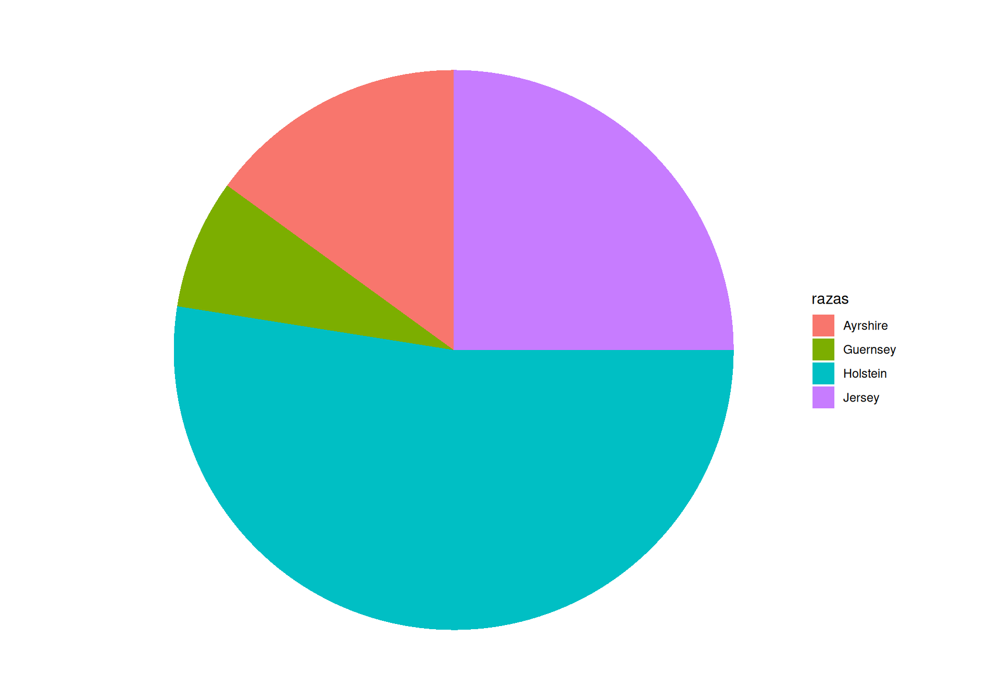
Recomendación
El ojo humano compara mal ángulos y áreas. Los mismos datos en barras se leen mucho mejor.
Gráfico de bastones
Para variables categoricas o cuantitativas discretas
Histograma
Para variables contínuas
Caso de estudio
Los datos de CO tenían la siguiente distribución de frecuencias

¿Como podemos cuantificar lo que vemos en el histograma?
Medidas de resumen
¿Qué son las medidas de resumen?
Son funciones que permiten extraer información relevante de la distribución de los datos y expresarla de manera resumida mediante números:
Tendencia central: resumen comportamiento de los datos más frecuentes, hacia donde se centra la distribución
Dispersión: resumen el grado de variabilidad o dispersión de los datos
Posición: indican la posición relativa de los datos
Forma: resumen el aspecto, asimetría, achatamiento/concentración, de la distribución.
Algo de notacion
Si \(x\) es un vector que representa una muestra con \(n\) observaciones, cada elemento de \(X\) se identifica por su orden mediante \(x_i\) donde \(i\) es la posición de la i-ésima observación.
Ejemplo: si \(x = [1.73, 1.84, 1.92, 2]\) son las alturas de 4 plantas de maiz, la altura de la 3° planta es \(x_3 = 1.92\)
Tendencia central: Media aritmética \(\bar{x}\)
Centro de gravedad de la muestra. Se define como el cociente entre la suma de los valores de la muestra y la cantidad observaciones
\[\bar{x} = \dfrac{1}{n} \sum_i^n x_i = \dfrac{\sum x_i}{n} = \dfrac{x_1 + x_2 + \cdots + x_n}{n}\]
Es la medida más común y fácil de calcular.
Es un buen estimador de la media poblacional \(\mu\)
Es sensible a los valores extremos
Ejemplo
Los pesos de 5 novillos son: 250, 230, 280, 235, 260. El peso promedio es:
\[\bar{x} = \dfrac{250 + 230 + 280 + 235 + 260}{5} = 251\]
Propiedades de la media aritmética (1/2)
Dado \(x = [2, 4, 6, 8, 10]\), con \(\bar{x} = 6\).
La suma de las desviaciones con respecto a la media aritmética es cero (0).
\(\sum (x_i - \bar{x}) = 0\)
Ejemplo
\((2-6) + (4-6) + (6-6) + (8-6) + (10-6) = -4 -2 + 0 + 2 + 4 = 0\)
La media de una constante \(a\) es la misma constante.
\(\bar{a} = a\)
Ejemplo
Si \(a = [5, 5, 5, 5, 5]\), \(\bar{a} = 5\)
Propiedades de la media aritmética (2/3)
La media de unos datos a los que se le suma o resta una constante \(a\) es la media más o menos la constante.
\(\overline{a \pm x_i} = a \pm \bar{x}\)
Ejemplo
Con \(a = 3\): \(x + 3 = [5, 7, 9, 11, 13]\)
Luego, \(\overline{x+3} = 9 = 6 + 3\)
La media del producto de cada valor de \(x\) por una constante \(a\) es igual al producto de la media de los valores y la constante.
\(\overline{ax_i} = a\bar{x}\)
Ejemplo
Con \(a = 2\): \(2x = [4, 8, 12, 16, 20]\)
Luego = \(\overline{2x} = 12 = 2 \times 6\)
Propiedades de la media aritmética (3/3)
Seguimos con \(x = [2, 4, 6, 8, 10]\), \(\bar{x} = 6\).
La media de la suma o resta de dos variables independientes es igual a la suma o resta de sus medias.
\(\overline{x_i \pm y_i} = \bar{x} \pm \bar{y}\)
Ejemplo
Si \(y = [1, 3, 5, 7, 9]\) entonces \(\bar{y} = 5\)
Luego, \(x + y = [3, 7, 11, 15, 19]\)
Entonces, \(\overline{x+y} = 11 = 6 + 5\)
Caso de estudio
¿Cuál es la media muestral del contenido de CO?
Con los 40 datos dejamos que R haga la cuenta con mean():
El contenido medio de CO en la muestra de 40 lotes es: 2.58 %
Tendencia central: la media ponderada
En la \(\bar{x}\), cada dato contribuye de manera igual, \(1/n\).
\[\bar{x} = \sum \dfrac{1}{n} x_i = \dfrac{\sum x_i}{n}\]
En algunos casos conviene ponderar las observaciones:
\[\bar{x}_p = \dfrac{\sum w_ix_i}{\sum w_i}\]
Ejemplo
En un rodeo lechero hay dos lotes de VO: lote 1 (100 vacas) y lote 2 (300). Las del lote 1 producen en promedio 40 L/dia mientras que las del lote 2 producen 25 L/día. ¿Cuál es la producción individual promedio del establecimiento?
¿Cuales son las \(x_i\) y los pesos \(w_i\)?
Tendencia central: la mediana \(\tilde{x}\)
Es una observacion que separa al conjunto de datos (ordenados) en dos partes iguales. Es una medida robusta ya que no es afectada por los valores extremos
\[\tilde{x} = \begin{cases} \dfrac{x_{n/2} + x_{(n/2)+1}}{2} &\text{si n es par} \\ x_{(n+1)/2} &\text{si n es impar} \end{cases}\]
Ejemplo (n impar)
\(x = [2_{(1)}, 4_{(2)}, 5_{(3)}, 9_{(4)}, 10_{(5)}]\)
Como \(n\) es impar, la posición central es: \((n+1)/2 = (5+1)/2 = 3\). Entonces la mediana es: \(x_3 = 5\)
Ejemplo (n par)
\(x = [2_{(1)}, 5_{(3)}, 9_{(4)}, 10_{(5)}]\)
Las posiciones a promediar son: \(n/2 = 4/2 = 2\) y \(n/2 + 1 = 4/2 + 1 = 3\)
Luego la mediana es: \(\dfrac{x_2 + x_3}{2} = \dfrac{5 + 9}{2} = 7\)
Caso de estudio
¿Cuál es el contenido de CO que separa la muestra en partes iguales?
Vimos el procedimiento a mano (ordenar y buscar la posición central). Con los 40 datos usamos directamente median():
El 50% de los lotes de la muestra tienen un contenido de CO inferior a 2.62.
Efecto valores extremos
Si al dato número 5 lo reemplazamos por CO == 7, ¿qué efecto tiene sobre la media y la mediana?
[1] 2.65125[1] 2.62En los datos originales la media y mediana era 2.57825 y 2.62 respectivamente.
Tendencia central: modo
Es el valor de la muestra más frecuente. Se obtiene directamente mirando la tabla de frecuencias.
Ejemplo: en el ejemplo de las chinches
chinches n percent
0 2 0.08
1 9 0.36
2 5 0.20
3 4 0.16
4 4 0.16
6 1 0.04¿Cual es el modo? La clase de mayor frecuencia.
Lo más frecuente en la muestra son las plantas con 1 chinche.
Medidas de dispersión: varianza \(s^2\)
El promedio de los desvíos cuadráticos respecto de la media aritmética.
\[s^2 = \dfrac{\sum (x_i - \bar{x})^2}{n-1} = \dfrac{1}{n-1} \left[ \sum x_i^2 - \dfrac{(\sum x_i)^2}{n} \right]\]
El denominador \(n-1\) representa los grados de libertad, es decir, el número de datos de la muestra que pueden variar cuando se usa el estimador de la media \(\bar{x}\).
Ejemplo
Los pesos de 5 novillos son 250, 230, 280, 235, 260 kg (media = 251).
Restando la media a cada valor y elevando al cuadrado:
\[s^2 = \dfrac{(250-251)^2 + (230-251)^2 + (280-251)^2 + (235-251)^2 + (260-251)^2}{5-1}\]
Los desvíos son \(-1, -21, 29, -16, 9\), entonces:
\[s^2 = \dfrac{(-1)^2 + (-21)^2 + 29^2 + (-16)^2 + 9^2}{5-1} = 405\]
Desvío estándar
\[s = \sqrt{s^2}\]
La desviación estándar es interpretable ya que está en la escala original. Es sensible a valores extremos ya que utiliza \(\bar{x}\) y los desvíos elevados al cuadrado.
Ejemplo
Retomando el ejemplo de los novillos, \(s^2 = 405\)
Luego, \(s = \sqrt{405} = 20.1\)
Propiedades de la varianza (1/4)
Usamos \(x = [2, 4, 6, 8, 10]\), con \(\text{Var}(x) = s^2_x = 10\).
Para cualquier conjunto de datos, la varianza nunca es menor a 0.
\(\text{Var}(x_i) \ge 0\)
Ejemplo
\(\text{Var}(x) = s^2_x = 10 \ge 0\)
La varianza de una constante \(a\) es igual a 0.
\(\text{Var}(a) = 0\)
Ejemplo
Si \(a = [5, 5, 5, 5, 5]\), ya vimos que \(\bar{a} = a = 5\)
Entonces cada desvío es \(a_i - \bar{a} = 5 - 5 = 0\)
Luego, \(\text{Var}(a) = \dfrac{\sum 0^2}{n-1} = 0\)
Propiedades de la varianza (2/4)
Seguimos con \(x = [2, 4, 6, 8, 10]\), \(\text{Var}(x) = 10\).
La varianza de los valores a los que se le suma o resta una constante \(a\) es igual a la varianza de los datos originales.
\(\text{Var}(a \pm x_i) = \text{Var}(a) \pm \text{Var}(x_i) = \text{Var}(x_i)\)
Ejemplo
Retomando el punto anterior, \(\text{Var}(3) = 0\)
Con \(x + 3 = [5, 7, 9, 11, 13]\):
\(\text{Var}(x+3) = \text{Var}(x) + \text{Var}(3) = 10 + 0 = 10\)
Propiedades de la varianza (3/4)
Seguimos con \(x = [2, 4, 6, 8, 10]\), \(\text{Var}(x) = 10\).
La varianza del producto de los valores de una variable y una constante \(a\) es igual a la varianza de los datos multiplicada por el cuadrado de la constante.
\(\text{Var}(a x_i) = a^2\text{Var}(x_i)\)
Ejemplo
Con \(a = 2\): \(2x = [4, 8, 12, 16, 20]\)
Luego, \(\text{Var}(2x) = 40 = 2^2 \times 10\)
Propiedades de la varianza (4/4)
Seguimos con \(x = [2, 4, 6, 8, 10]\), \(\text{Var}(x) = 10\).
La varianza de la suma o resta de los valores de dos variables independientes es igual a la suma de sus varianzas.
\(\text{Var}({x_i \pm y_i}) = \text{Var}(x_i) + \text{Var}(y_i)\)
Ejemplo
Si \(y = [7, 1, 5, 9, 3]\) (independiente de \(x\), \(\text{Var}(y) = 10\))
Suma: \(x+y = [9, 5, 11, 17, 13]\)
\(\text{Var}(x+y) = 20 = \text{Var}(x) + \text{Var}(y) = 10 + 10\)
Resta: \(x-y = [-5, 3, 1, -1, 7]\)
\(\text{Var}(x-y) = 20 = \text{Var}(x) + \text{Var}(y) = 10 + 10\)
Caso de estudio
¿Cuál es la dispersión de los valores de CO en la muestra de 40 lotes?
Vimos a mano el cálculo con 5 números. Con los 40 datos usamos las funciones var() y sd() de R:
Por defecto estas funciones usan \(n-1\) como denominador, i.e. estimador muestral insesgado. Para obtener la varianza poblacional hay que multiplicarlo por \((n-1)/n\).
La desviación estándar de los valores de CO es de 0.71 %.
Dispersión: coeficiente de variación \(CV\)
Medida de dispersión relativa útil para comparar la variabilidad entre muestras.
\[CV = \dfrac{s}{|\bar{x}|}\]
Posición relativa | Z-score
Es una transformación que centra los valores por la media y los escala por el desvío estandar
\[z = \dfrac{x_i - \bar{x}}{s}\]
El resultado adimensional.
Representa unidades de desvío respecto de la media.
Ejemplo
Rendimientos de 100 lotes trigo
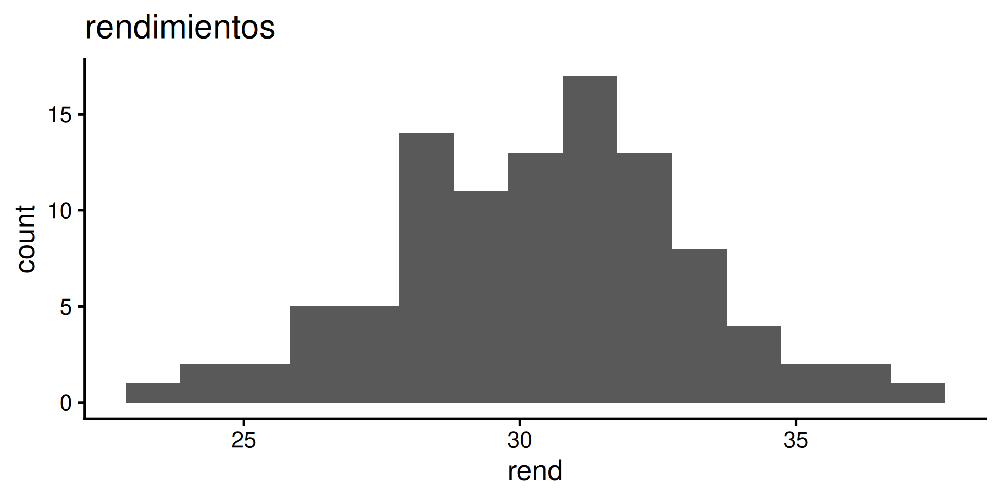
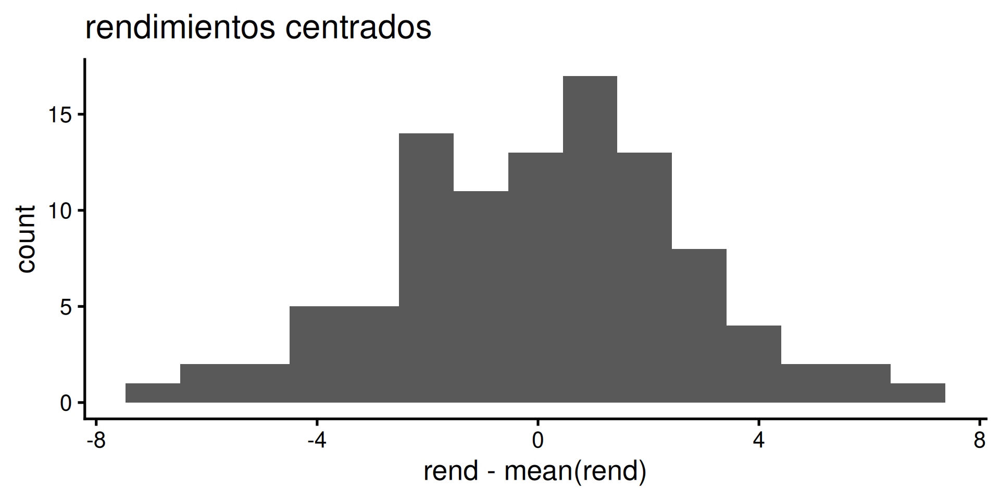
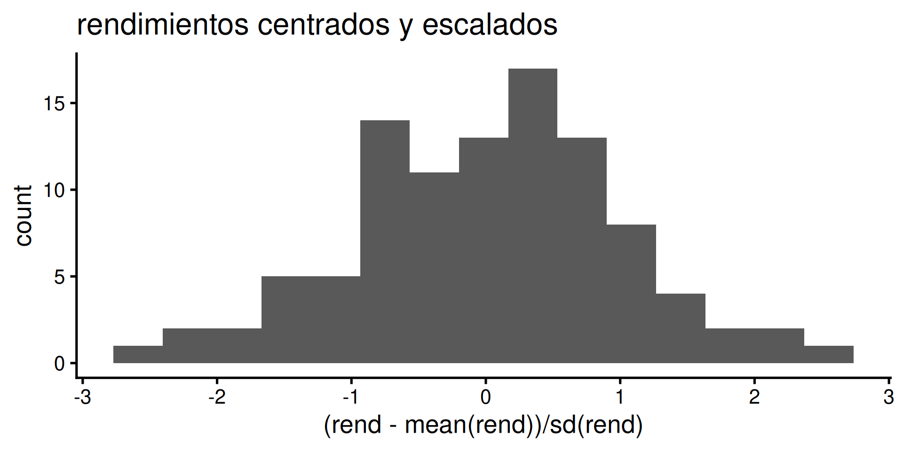
Caso de estudio
¿Cuales son los valores \(z\) de cada uno de los datos de CO? ¿Hay alguno mayor \(|z| \ge 2\) o \(|z| \ge 3\)?
Paso 1. crear una nueva variable Z aplicando la fórmula de puntuación z
CO Z
1 2.62 0.05839834
2 2.70 0.17029936
3 3.23 0.91164358
4 1.46 -1.56416637
....Otra forma de obtener los valores Z en R, una de ellas es usando scale()
Paso 2. filtrar los valores con filter()
Valores \(|z| \ge 2\)
Id_lote lat long Prof CO clases Z
1 730 -31.40278 -61.30556 0-15 4.08 [4,4.5) 2.100592
2 511 -31.44722 -61.05556 0-15 5.16 [5,5.5] 3.611256Valores \(|z| \ge 3\)
Id_lote lat long Prof CO clases Z
1 511 -31.44722 -61.05556 0-15 5.16 [5,5.5] 3.611256Hay 2 lotes que tienen CO más allá de 2 desviaciónes estándar respecto de la media. Uno de ellos está a 3 desviaciones estandar de la media.
Medidas de posición: cuantiles
Es la generalización del concepto de la mediana. En R se calculan con la función quantile() y a la inversa con ecdf()
Cuartiles \(Q_i\): dividen los datos en 4 partes iguales
Deciles \(D_i\): dividen los datos en 10 partes iguales
Percentiles \(P_i\): dividen los datos en 100 partes iguales
Relación:
\[\tilde{x} = Q_2 = D_5 = P_{50}\]
Una medida importante es el rango intercuartílico ( \(\text{IQR}\) ) que indica entre que valores se encuentra el 50% central de la distribución de los datos
\[\text{IQR} = Q_3 - Q_1\]
Caso de estudio
Calcular los valores de CO que separa a la muestra en 4 partes iguales
¿Cual es el menor valor de CO del 20% superior de la muestra?
Invirtiendo la pregunta… ¿qué proporción de datos queda por debajo de un valor dado?
Esa es la función de distribución acumulada empírica (ECDF): la inversa de quantile(). En un gráfico se obtiene con stat_ecdf().
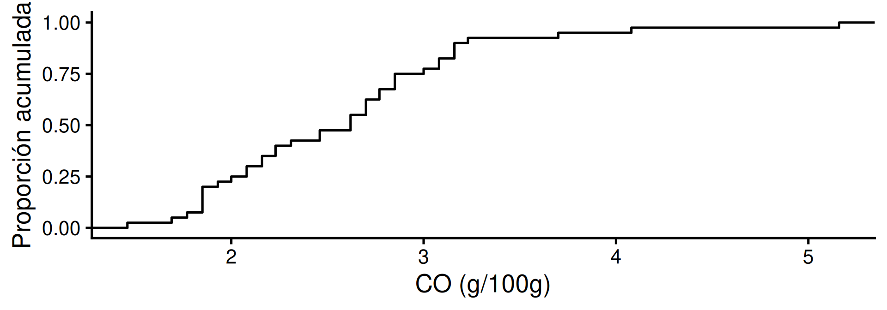
Reemplaza a la ojiva: se lee directo qué proporción de lotes queda por debajo de cada valor de CO.
Gráficos de caja
Gráfico exploratorio basado en medidas robustas (mediana, cuartiles, etc) inventado por John Tukey
Permite ver la región central de los datos, el sesgo y la presencia datos atípicos leves y extremos
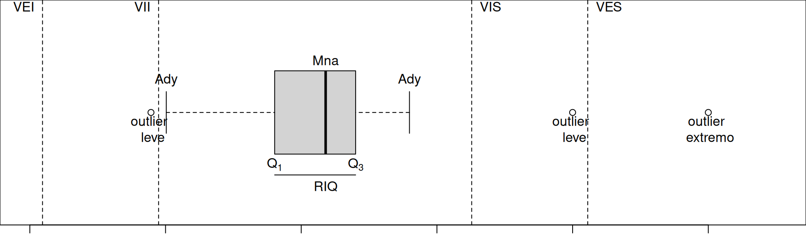
\[\begin{align} \text{VII} &= Q_1 - 1.5 \times \text{IQR} \\ \text{VEI} &= Q_1 - 3 \times \text{IQR}\\ \text{VIS} &= Q_3 + 1.5 \times \text{IQR}\\ \text{VES} &= Q_3 + 3 \times \text{IQR} \end{align}\]
Caso de estudio
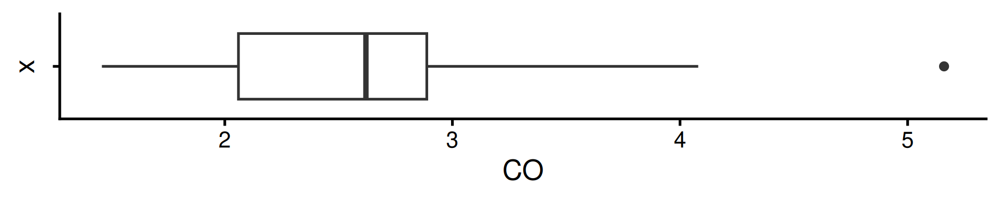
Según este gráfico el 50% de la distribución esta entre 2.06 y 2.89 y el sesgo es pequeño. El valor CO == 5.16 es un outlier extremo.
Medidas de forma
Asimetría
La simetría de una distribución hace referencia a como se distribuyen los valores en torno a la media.
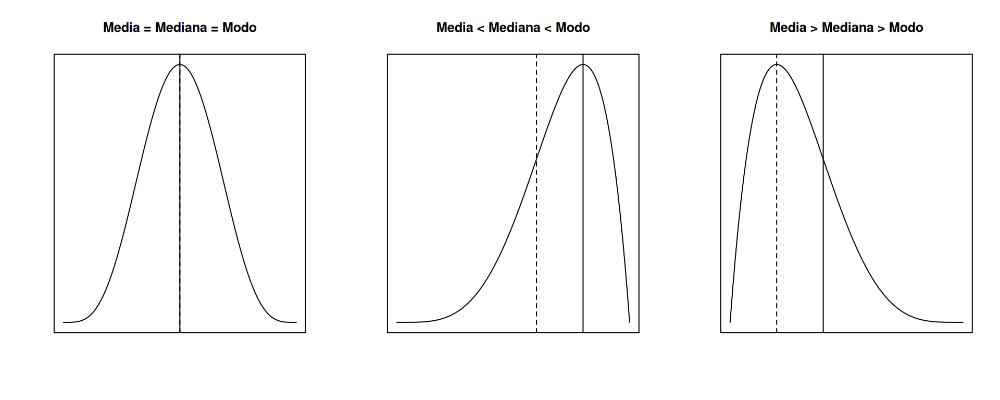
En una distribución simétrica, la mitad izquierda es identica a la mitad derecha
Kurtosis
La kurtosis indica cuanto se concentran los valores en torno a la media.
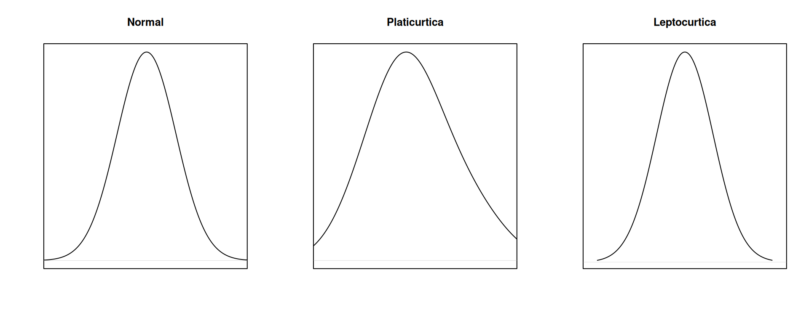
Las distribuciones leptocurticas tienen menor variabilidad. Lo opuesto ocurre con las platicurticas.
Momentos
Los coeficientes de asimetría y kurtosis derivan de los momentos estandarizados
\[m_k = \dfrac{\sum (x_i - \bar{x})^k}{n}\]
Si \(k = 1\), \(m = 0\) dado que \(\sum (X_i - \bar{x}) = 0\)
Si \(k = 2\), \(m\) es igual al estimador sesgado de la varianza poblacional
Los momentos 3 y 4 tienen información sobre la asimetría y curtosis
Coeficiente simetría
\[\sqrt{b_1} = \dfrac{m_3}{\sqrt{m_2^3}} = \dfrac{\sqrt{n} \sum (x_i - \bar{x})^3}{\sqrt{ \left[ \sum(x_i - \bar{x})^2 \right]^3}}\]
Si \(\sqrt{b_1} = 0\) la distribución es simétrica
Si \(\sqrt{b_1} > 0\) la distribución es sesgada a derecha
Si \(\sqrt{b_1} < 0\) la distribución es sesgada a izquierda
En R:
Momentos
Los coeficientes de asimetría y kurtosis derivan de los momentos estandarizados
\[m_k = \dfrac{\sum (x_i - \bar{x})^k}{n}\]
Si \(k = 1\), \(m = 0\) dado que \(\sum (X_i - \bar{x}) = 0\)
Si \(k = 2\), \(m\) es igual al estimador sesgado de la varianza poblacional
Los momentos 3 y 4 tienen información sobre la asimetría y curtosis
Todas las medidas juntas
Volvemos al gráfico y la tabla del comienzo, ahora sabiendo interpretarlos:
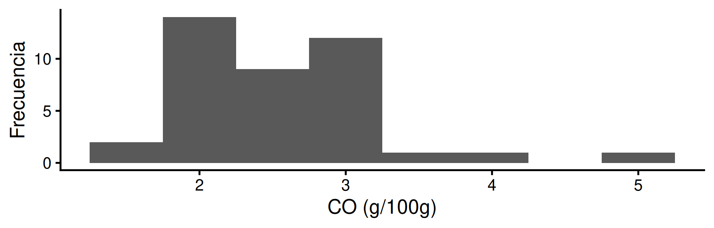
n | media | mediana | desv | min | max | IQR | asim | kurt |
|---|---|---|---|---|---|---|---|---|
40 | 2.58 | 2.62 | 0.71 | 1.46 | 5.16 | 0.83 | 1.26 | 5.67 |
- Centro: media ≈ mediana → distribución casi simétrica, en torno a 2.58 %.
- Dispersión: desvío 0.71 % e IQR 0.83 resumen la variabilidad entre lotes.
- Forma: asimetría leve (1.26) y kurtosis cercana a la normal, con algún valor extremo (el outlier del boxplot).